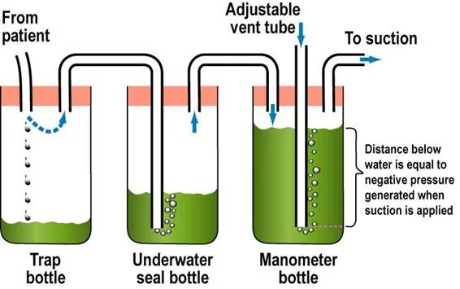
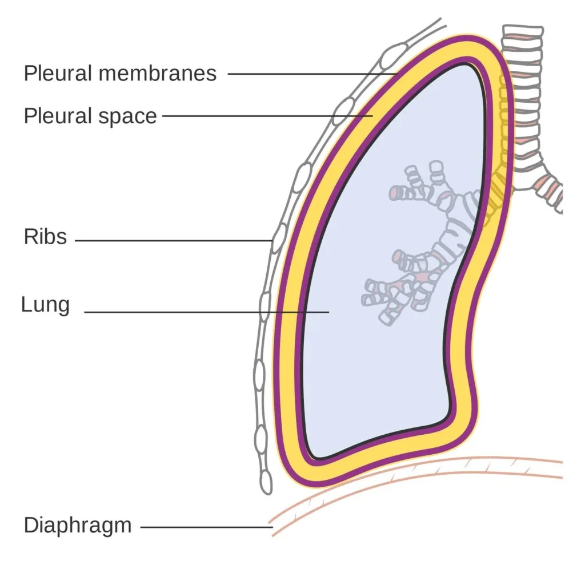
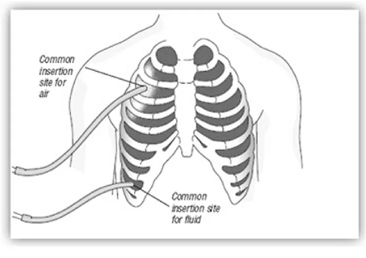
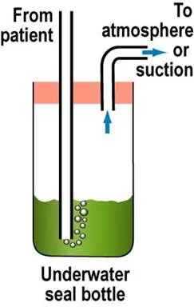
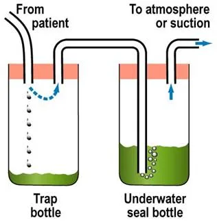

Expanded Nursing Uganda Explanation
Under Water Seal Drainage should be understood beyond a short definition. Link the concept to patient history, focused assessment, common risks, nursing priorities, documentation and evaluation of outcomes.
01 UNDER WATER SEAL DRAINAGE
Under water seal drainage is a system that allows drainage of the pleural space using an airtight system to maintain sub-atmospheric intrapleural pressure .
It’s used when air or fluid gets trapped in the pleural space .
- Pleural Space : This is the space between the two layers of pleura, which are thin membranes lining the lungs and the inside of the chest wall. Normally, this space has negative pressure, which helps the lungs stay inflated.
Purpose : The water seal drainage system has two main jobs:
- To remove air and fluid : It allows air and fluid that have accumulated in the pleural space to escape out of the chest. Under water seal drainage is used to remove blood, air, pus, or serous fluid from the pleural cavity after thoracotomy, chest injury, pleural effusion, or pneumothorax.
- To prevent backflow : It stops air and fluid from going back into the pleural space, especially when you breathe in (inhale). This one-way system is nice for proper lung function.
In simpler terms : Imagine a bottle with a straw dipped in water. When you blow into the straw, bubbles escape, but water doesn’t come back up the straw into your mouth. Water seal drainage works on a similar principle for your chest.
- The underwater seal acts as a one-way valve.
02 Conditions necessitating Underwater Seal Drainage
- Traumatic Pneumothorax: This happens when an injury to the chest (like a car accident or stab wound) causes air to leak into the pleural space, collapsing the lung.
- Hemopneumothorax : This is a combination of air and blood in the pleural space. It can also be caused by trauma.
- Spontaneous Pneumothorax : Sometimes, a lung can collapse on its own, without an obvious injury. This is more common in tall, thin young adults or people with lung diseases.
- Iatrogenic Pneumothorax: This occurs unintentionally as a result of a medical procedure, such as inserting a central line or during a lung biopsy.
- Broncho-pleural Fistula : This is an abnormal connection between an airway in the lung (bronchus) and the pleural space, causing air to leak into the pleural space.
- Emphysema : A chronic lung disease where air sacs in the lungs are damaged. In some cases, it can lead to air leaks into the pleural space.
- Malignancy : Lung cancers or other cancers in the chest can sometimes cause fluid buildup in the pleural space (pleural effusion).
- Pleural Effusion : This is the buildup of excess fluid in the pleural space. It can be caused by various conditions like heart failure, pneumonia, or cancer.
- Thoracic or Thoraco-abdominal Surgeries : After surgeries in the chest or upper abdomen, chest tubes are often placed to drain air and fluid and prevent complications.
In short : Any condition that causes air or fluid to accumulate in the pleural space and disrupt normal lung function may require water seal drainage.
03 Indications of Water Seal Drainage
The goals of water seal drainage are to:
- Permit Drainage of Air and Fluid: The most direct purpose is to remove unwanted air, blood, or fluid from the pleural cavity. This helps to relieve pressure and allow the lung to re-expand.
- Establish Normal Negative Pressure : The pleural space normally has a negative pressure, which is essential for keeping the lungs inflated. Water seal drainage helps to restore this negative pressure. Think of it like sucking air out of a balloon to make it inflate inside a jar.
- Promote Lung Expansion: By removing air and fluid and restoring negative pressure, water seal drainage allows the collapsed lung to re-inflate and function properly.
- Equalize Pressure on Both Sides of the Thoracic Cavity: Conditions like pneumothorax can disrupt the pressure balance in the chest. Water seal drainage helps to restore this balance.
- Prevent Tension Pneumothorax : In a tension pneumothorax, air keeps getting trapped in the pleural space and cannot escape, leading to dangerous pressure buildup that can compress the heart and major blood vessels. Water seal drainage prevents this life-threatening situation by providing an escape route for the air.
- Provide Continuous Suction (if needed) : In some cases, gravity alone may not be enough to drain the air or fluid, or to re-expand the lung quickly. In these situations, gentle suction may be added to the water seal drainage system to assist the process.
In essence : Water seal drainage aims to bring the lung back to its normal, healthy state by removing obstacles and restoring the necessary pressure for it to function.
04 Site for Chest Tube Insertion
Where is the Chest Tube Inserted? The location of the chest tube depends on the reason for drainage:
For Thoracic Surgery (usually two tubes):
Anterior Chest Tube (Front):
- Location : Usually placed in the upper and front part of the chest wall.
- Intercostal Space : Inserted in the 2nd intercostal space (the space between the 2nd and 3rd ribs).
- Purpose : Primarily to remove air. Air rises, so placing the tube high in the chest helps to drain air that has collected in the upper pleural cavity.
Posterior Chest Tube (Back):
- Location : Placed in the back of the chest.
- Intercostal Space : Inserted in the 8th or 9th intercostal space at the mid-axillary line (roughly in line with the middle of your armpit).
- Purpose : Primarily to remove fluid (like blood or serous fluid). Fluid tends to settle at the bottom of the pleural cavity due to gravity, so a lower tube placement is effective for drainage.
- Tube Diameter : Tubes for fluid drainage (posterior tubes) are often wider or longer than tubes for air drainage (anterior tubes) to facilitate better fluid removal.
For Pneumothorax (usually one tube for air removal):
- Location : In the front or side of the chest.
- Intercostal Space : Usually placed in the 2nd or 3rd intercostal space along the mid-clavicular line (in line with the middle of your collarbone) or anterior axillary line (front of your armpit).
- Purpose : To remove air from the pleural space, allowing the lung to re-expand. Since air rises, a higher placement is effective for pneumothorax.
05 Types of Drainage Systems
Water seal drainage systems can be categorized based on the number of bottles (or chambers in modern systems). The basic principle remains the same, but complexity increases with more bottles.
Components :
Drainage Bottle : A single sterile bottle containing a specific amount of sterile water or saline solution.
Two Tubes :
- Patient Tube (A) : Connects to the chest tube from the patient. This tube is submerged underwater in the bottle, creating the water seal.
- Vent Tube (B) : A shorter tube that vents to the atmosphere (or suction). This allows air to escape from the bottle.
How it Works:
- Air and fluid drain from the patient’s pleural space through tube A into the bottle.
- The underwater seal prevents air from being sucked back into the pleural space during inhalation.
- Air from the pleural space bubbles through the water and escapes out through vent tube B.
- Drainage fluid collects in the bottle.
Limitations:
- As drainage collects in the bottle, the water level rises, increasing the positive pressure needed to push out more fluid. This can slow down drainage if a large amount of fluid needs to be removed.
- Not ideal for large amounts of drainage or when suction is needed.
Components:
- Trap Bottle (Collection Bottle) : The first bottle to receive drainage from the patient. It’s simply a collection container and doesn’t contain water.
- Underwater Seal Bottle : The second bottle, containing sterile water and acting as the water seal, similar to the one-bottle system.
How it Works:
- Drainage from the patient first goes into the Trap Bottle, which collects the fluid.
- Air then passes from the Trap Bottle to the Underwater Seal Bottle.
- The Underwater Seal Bottle functions exactly as in the one-bottle system, providing the water seal and venting air.
- The collection of drainage in a separate bottle prevents the increasing water level issue of the one-bottle system.
Advantages over One-Bottle System:
- More efficient drainage, especially for larger volumes, as the water seal is not affected by the amount of drainage.
- Allows for more accurate measurement of drainage as it’s collected in a separate bottle.
Components :
- Trap Bottle (Collection Bottle) : First bottle, collects drainage.
- Underwater Seal Bottle: Second bottle, provides the water seal.
- Manometer Bottle (Suction Control Bottle) : Third bottle, controls the amount of suction applied to the system. It also contains sterile water.
- Adjustable Vent Tube : A tube in the Manometer Bottle that is open to the atmosphere.
How it Works:
Drainage flows through the Trap Bottle and Underwater Seal Bottle as in the two-bottle system.
Suction Control : The Manometer Bottle regulates the suction.
- The depth of the vent tube in the water in the Manometer Bottle determines the amount of negative pressure (suction). For example, if the tube is submerged 20 cm underwater, the suction will be approximately -20 cm H₂O.
- When suction is applied, air is drawn in through the adjustable vent tube and bubbles through the water in the Manometer Bottle. This bubbling indicates that the suction is working and is being controlled at the desired level.
- Excess suction is vented to the atmosphere, preventing excessive negative pressure from being applied to the patient’s pleural space.
Advantages of Three-Bottle System:
- Controlled Suction: Allows for the application of gentle suction to aid in lung re-expansion and drainage, especially when gravity drainage is insufficient.
- Safety : Prevents excessive suction, which could damage lung tissue.
- More efficient drainage : Especially useful for persistent air leaks or when rapid lung re-expansion is needed.
Modern Systems: Today, many systems use pre-assembled, disposable plastic units that combine the functions of these bottles into chambers within a single unit. These are often referred to as multi-chamber drainage systems and are more convenient and easier to manage, but the underlying principles are the same as the bottle systems.
06 Factors Affecting Water Seal Drainage
Several factors can influence how well a water seal drainage system works. Knowing these factors is key for effective nursing care and management.
1. Proper Placement of Chest Catheter (Chest Tube) : Rationale : Correct placement is key for effective drainage. As discussed earlier, tubes placed high are for air, and tubes placed low are for fluid.
Considerations :
- Intercostal Space : Using the correct intercostal space (e.g., 2nd for air, 8th-9th for fluid).
- Anterior/Posterior: Anterior for air, posterior for fluid in surgical cases with two tubes.
- Single Tube: If only one tube is used, it’s often placed lower for general drainage of both air and fluid, although its effectiveness for air drainage alone might be less optimal than a higher placed tube in pneumothorax.
- Separate Bottles : If multiple tubes are placed, they should be connected to separate drainage bottles to manage drainage from different areas effectively.
2. Proper Placement of Chest Drainage Apparatus : Rationale : Gravity is key. The drainage system must be lower than the chest for drainage to occur effectively and to prevent backflow.
Considerations :
- Below Chest Level: Always ensure the drainage unit is consistently below the patient’s chest level, whether the patient is in bed, sitting, or walking.
- Gravity Assist : This helps gravity to pull drainage from the pleural space into the collection system.
- Prevent Backflow : Keeping it low prevents fluid in the drainage system from flowing back into the pleural space, which could cause infection or other complications.
- During Transfer : When moving the patient (e.g., to another bed or for transport), the drainage unit should be held or placed carefully below chest level. It’s also advisable to briefly clamp the tubing (as instructed by protocol or physician order) during transfer to prevent accidental spillage or backflow, but clamping should be brief and tubing must be unclamped immediately after.
3. Length of Drainage Tubing : Rationale : Tubing length affects drainage efficiency and patient mobility.
Considerations :
- Not Too Short : Tubing that is too short can restrict patient movement, potentially dislodge the chest tube, or cause tension on the insertion site.
- Not Too Long : Tubing that is too long can create loops that impede drainage flow due to increased resistance and potential fluid collection in loops.
- Straight Line : Tubing should ideally run in a relatively straight line from the chest to the drainage system, avoiding kinks or dependent loops.
- No Loops : Avoid creating loops in the tubing, as these can trap fluid and air, obstructing drainage.
4. Patency of Chest Tubing : Rationale: The chest tube must be open and clear for drainage to flow.
Considerations :
- Frequent Checks : Regularly check the tubing for kinks, clamps, or pressure points that might obstruct flow.
- No Kinks or Pressure : Ensure the patient is not lying on the tubing, and that bedding or clothing is not pressing on it.
- Mucus Plugs/Clots : Clots or mucus plugs inside the tubing can block drainage.
- Milking the Tube : If clots or plugs are suspected, gently “milking” or stripping the tubing (following hospital protocol and physician orders) can help to dislodge them and maintain patency. However, routine stripping/milking is generally discouraged as it can create excessive negative pressure and potentially damage lung tissue. Gentle manipulation to maintain patency is preferred.
- Avoid Clamping : Never clamp the chest tubing routinely, as this can lead to tension pneumothorax if air is still leaking into the pleural space. Clamping is generally only done briefly in specific situations, such as changing the drainage system, assessing for air leaks, or prior to removal, and should be done per physician order or hospital protocol.
5. Maintenance of Air Tight Drainage System : Rationale : The system must be airtight to maintain the water seal and suction (if used) and prevent air from entering the pleural space.
Considerations :
- Air Tight Seals: Ensure all connections in the drainage system (tubing connections, bottle stoppers, connections to the chest tube at the insertion site) are airtight.
- Taping Connections : Tape all tubing connections securely to prevent accidental disconnections and air leaks.
- Stoppers and Seals : Make sure bottle stoppers (if using bottle systems) are firmly in place and that any seals in modern systems are intact.
- Check for Leaks : Regularly check the system for air leaks. Continuous bubbling in the water seal bottle (when not expected) may indicate an air leak in the system rather than from the patient. To check for system leaks, briefly and sequentially clamp sections of the tubing starting close to the patient. If bubbling stops when you clamp a certain section, the leak is likely in that section or closer to the patient. If bubbling continues even when clamped near the patient, the leak is likely from the patient (e.g., lung air leak) or the chest tube insertion site.
6. Position of the Client : Rationale: Patient position can affect drainage, especially fluid drainage.
Considerations :
- Fowler’s Position (Semi- or High-Fowler’s): Elevating the head of the bed (Fowler’s position) is often recommended.
- Fluid Localization : Fowler’s position helps to localize fluid in the lower pleural space, making it easier to drain through a lower placed chest tube.
- Lung Expansion : It can also improve lung expansion and breathing mechanics.
- Regular Repositioning : Encourage the patient to change position regularly (within activity limitations) to promote drainage from different areas of the pleural space and prevent fluid from settling in one area.
7. Application of Mechanical Suction : Rationale : Suction, when used appropriately, can enhance drainage but must be applied correctly.
Considerations :
- Continuous and Gentle: Suction should be continuous and gentle, not intermittent or high pressure.
When to Use Suction: Suction is typically used when:
- Gravity drainage alone is not enough (e.g., persistent air leak, slow lung re-expansion).
- The patient’s respiratory effort and cough are weak.
- There’s a fast or significant air leak into the pleural space.
- Speedier removal of air or fluid from the pleural space is needed.
- Physician Order: Suction should always be applied based on a physician’s order.
- Proper Setting : Ensure the suction is set to the prescribed level (often indicated by the water level in the suction control bottle or the setting on a modern drainage unit).
- Bubbling in Suction Chamber : Gentle, continuous bubbling in the suction control chamber (Manometer Bottle) is a sign that suction is being applied correctly. Vigorous bubbling is usually unnecessary and can increase water evaporation and noise.
8. Activity of the Client : Rationale : Patient activity can promote drainage and lung function.
Considerations :
- Movement on Bed : Encourage gentle movement in bed (turning side to side, repositioning). Movement helps to shift fluid and air within the pleural space, promoting drainage.
- Coughing and Deep Breathing : Encourage the patient to cough and deep breathe regularly.
- Intrapleural and Intrapulmonary Pressure : Coughing and deep breathing help to increase intrapleural and intrapulmonary pressure, which can assist in expelling air and fluid from the pleural space and promote lung expansion.
- Walking (if appropriate): If medically appropriate and ordered by the physician, ambulation (walking) can also be beneficial, as it encourages deeper breathing and overall lung function.
07 Requirements for Under Water Seal Drainage (UWSD)
- STERILE TROLLEY – Top Shelf
- A trocar and cannula, intercostal tubing, and an introducer
- Artery forceps in a receiver
- Scalpel
- Suturing material
- Safety pin
- A large Winchester bottle containing water or normal saline to a level of about 6cm
- A rubber cork pierced by a short and long glass tube or by rigid plastic tubes
- Bottom Shelf
- A pair of gloves
- Chest X-ray investigations and ultrasound scan results
- A dressing pack
- A patient’s file
- Bedside
- Hand washing equipment
- Suction machine
- Screen
- Patient’s file
- Emergency tray
08 Procedure for Underwater Seal Drainage (UWSD)
- Step Action Rationale
- Preparation of equipment
- 1 Preferably a graduated bottle is used For correct reading of the drainage fluid
- 2 Assist Doctor to submerge the long tube in the water at 2 to 3 cm but must not touch the bottom of the bottle. The short tube acts as an escape route for air in the vacuum space in the bottle. To prevent air from going to pleural cavity
- 3 Assist the Doctor to connect the tube to the top of the under-water to the patient’s intercostal drainage tube. To drain fluid from the pleural cavity
- Procedure
- 1 Explain the procedure carefully to the patient; to understand the importance of limited movements during the period of UWSD. Explanation encourages patients cooperation and relieves anxiety
- 2 Take the trolley to the bedside, screen the bed and close nearby windows. To provide privacy
- 3 Wash and dry hands and be ready to assist the doctor. Promote hygiene measures
- 4 Position the patient leaning over the bed table supported by pillows. The patient’s arm which is on the side where the tube will be inserted must be placed forward and supported by a nurse. This position gives best access to the second or third intercostal space
- 5 Observe the patient’s colour, pulse and respirations throughout the procedure. To detect any change in patient condition and manage accordingly
- 6 The doctor cleans the patient’s skin, places a drape in position and injects local anaesthesia. A scalpel is used to make an incision through the skin and muscle of the intercostal space. Using the introducer, the tubing is inserted and secures it with a stitch. Local anaesthesia helps to relieve pain
- 7 The nurse connects the tube to the UWSD bottle once the introducer is removed, then clamps the tube with two pairs of clamps until all the connections of the apparatus are sealed. To be able to clip the tube so as to prevent air going to the lungs
- 8 Remove the clamps and check the functioning of the apparatus by noting if the fluid in the tube rises and falls in rhythm with the patient’s respirations. To ensure that the system is air tight and no air leakages and no risk of emphysema.
- 9 Apply a dressing to the wound. A dressing makes an airtight seal at the incision site and prevents infection.
- 10 Wash hands, clear away the equipment and leave the patient comfortable. To prevent spread of infections
- Changing the bottle
- 11 • Securely clamp off the drain with two clamps but for a short time. • Disconnect the tubing and put used apparatus to one side. • Connect new tubing and bottle and remove the clamps. Minimise re-infection of the patient.
- 12 Monitor the fluid in tubing whether it is moving up and down in rhythm with the patient’s respiration rate. To ensure that the tube is in situ and functioning.
- 13 Record the amount of drainage on the fluid balance chart and note any abnormalities. For effective assessment of progress of therapy and the patient
- Wash hands, Clear away and clean the used apparatus and equipment. To prevent spread of infections
Points to remember
- Make sure that all connections are secure to avoid leakages
- Check that the patient is not compressing or kicking any part of the drainage system, to avoid obstructing the tube.
- The bottle must always remain below the level of the patient’s chest and should preferably be in a stand to avoid being easily knocked over, to prevent back flow of fluid from drainage chamber to pleural cavity and to maintain the water seal.
09 Nursing Uganda Clinical Lens
Use Under Water Seal Drainage as a practical nursing topic, not only a memorized definition. Turn the topic into practical nursing knowledge: meaning, assessment, care priorities, teaching and evaluation.
- What to understand first: define under water seal drainage, identify the normal or expected pattern, then explain what changes when the patient is unwell.
- Why it matters in care: the nurse must recognize risk early, explain findings clearly, document accurately and know when to escalate.
- How to revise it: connect each point to assessment, nursing diagnosis or care problem, intervention, rationale and evaluation.
10 Assessment Guide
- Key definitions, patient history, focused observations and risk factors.
- Findings that are normal, abnormal or urgent.
- Resources, referral needs and documentation requirements.
11 Nursing Priorities, Rationales and Outcomes
- Protect safety, comfort, dignity and infection prevention.
- Provide clear care, education and escalation when needed.
- Evaluate response and record what changed.
The rationale for these priorities is patient safety: nursing actions should prevent deterioration, reduce discomfort, support recovery and create clear evidence for the next caregiver.
- Expected outcome: The topic is understood in a way that supports safe nursing judgement and revision.
12 Patient Teaching and Revision Check
- Explain under water seal drainage in simple language the patient or caregiver can repeat back.
- Teach warning signs, medicine or follow-up instructions, hygiene or lifestyle points where relevant.
- For exams, prepare a short answer using: definition, causes or risk factors, signs, assessment, management, complications and prevention.
- For ward practice, document baseline findings, actions taken, patient response and the plan for review.
Illustrations and Diagrams (7)







Related Video Lectures
Watch nursing lecture videos on YouTube for this topic. Opens in a new tab.
Watch on YouTubeExternal link: YouTube may use its own cookies and terms. Nursing Uganda is not affiliated with YouTube.